02 — Logo e isotipo
El nombre y la firma.
El sistema visual arranca aquí. Cada elemento tiene reglas de uso claras según contexto, escala y soporte. Nunca se modifica, deforma ni se generan versiones nuevas fuera de este sistema.
El origen del nombre.
El nombre Jaltech tiene dos partes con significado propio. Una habla de quiénes somos. La otra, de qué hacemos.
JAL
J
José Lopera — hermano fundador.
A
Alejandro Lopera — hermano fundador.
L
Lopera — apellido compartido.
JAL es la firma personal de la empresa. Dos hermanos, un apellido, una historia familiar que sostiene la marca desde su origen.
TECH
Accesorios tecnológicos — la categoría que distribuimos.
Distribución mayorista — el modelo de negocio.
Aliados — quienes mueven el portafolio en la red.
TECH ancla la marca en su realidad operativa. No fabricamos: distribuimos. No vendemos al final: trabajamos con aliados que sí lo hacen.
El isotipo.
El isotipo es la firma visual más compacta de la marca. Funciona solo, sin texto, en cualquier contexto donde se necesite presencia de marca.
Construcción
El isotipo nace de la unión visual de la J y la A, las iniciales de los dos hermanos fundadores. La construcción es limpia y geométrica.
El isotipo nace de la unión de sus formas base y puede leerse como una silueta ascendente, asociada sutilmente con Medellín y su entorno montañoso.
Variantes oficiales.
Tres formatos (horizontal, vertical, isotipo), dos versiones cada uno (full color y una tinta). Total: 6 variantes oficiales. Estas son las únicas autorizadas.

Horizontal · Full color

Vertical · 1 color

Isotipo · 1 color
Regla de contraste.
Esta es una regla técnica obligatoria, no una sugerencia. La versión full color del logo y el isotipo se construyen sobre fondos claros. Sobre fondos oscuros, siempre se usa la versión en una tinta.
Correcto
Full color → fondo claro
Blanco, off-white o gris muy claro. El logo conserva sus colores reales.
Correcto
Fondo oscuro → versión 1 color
Blanco o monocroma. Nunca se usa la versión full color sobre fondos oscuros.
Zona de protección.
La zona de protección equivale a la altura de la letra "e" del logotipo. Ningún elemento gráfico, texto, borde o margen debe entrar dentro de esa zona. Esta regla aplica a las variantes del logo Jaltech, incluyendo el isotipo.
Tamaños mínimos.
Cada variante tiene un tamaño mínimo de uso. Por debajo, el logo pierde legibilidad y debe sustituirse por la siguiente versión del sistema. La escala muestra cómo se reduce visualmente cada variante hasta su límite.
Escala horizontal
Logo horizontal
Mínimo 120 px de ancho
Límite recomendado para mantener legible el nombre completo.
Reducción crítica
Usar con cuidado
Si el espacio baja de este punto, el isotipo debe tomar el relevo.
Relevo visual
Isotipo 24 px
Tamaño mínimo de marca. No usar por debajo de este límite.
Escala vertical
Logo vertical
Mínimo 60 px de alto
Funciona mejor en columnas, perfiles o espacios estrechos.
Reducción crítica
Usar con cuidado
Cuando el texto pierde lectura, cambiar a isotipo.
Relevo visual
Isotipo 24 px
Es el límite visual recomendado para mantener la forma.
Flujo de reducción: a medida que el espacio disminuye, el sistema escala desde el logo horizontal → vertical → isotipo. Cuando el logo completo ya no es legible, el isotipo asume la firma visual de la marca.
Uso del logo por territorio.
Corporativo y Distribuidores son territorios de comunicación de Jaltech. Comparten la misma identidad y el mismo logo. Lo que cambia es el lenguaje visual alrededor de la marca, no la marca.
Territorio
Corporativo
Logo Jaltech en su aplicación más limpia. Acompañado de aire, jerarquía sobria y baja carga visual. Prioriza confianza institucional sobre impacto.
Territorio
Distribuidores
Mismo logo Jaltech, con mayor libertad en composición y presencia. Convive con producto protagonista, promociones y elementos gráficos más dinámicos.
Partner POS cuenta con lineamientos específicos dentro del universo POS; TecniGo posee una identidad de marca independiente. Consulta la Guía de Agencia para su aplicación detallada.
Isotipo más allá del logo
Aplicaciones del isotipo como recurso visual.
El isotipo no se queda en el logo. Es un activo gráfico flexible que aparece como firma, sello, watermark o textura en distintos puntos de contacto. Siempre conserva su forma original.
Sello de marca
Como watermark en presentaciones, papelería interna y portadas. Siempre en intensidad sutil.
Firma en piezas
Como cierre en mailings, posts y materiales largos. Sustituye al logo cuando el espacio es reducido.
Botón o ícono
Como botón de marca en interfaces digitales, app icons, favicons y avatares de redes sociales.
Recurso gráfico
Puede integrarse de forma puntual en fondos, composiciones o soportes cuando aporte identidad, sin convertirse en una textura repetitiva obligatoria.
Pin de Jalbot
En el pecho de Jalbot. Es la única marca que carga el personaje. Nunca el logo completo.
Sello de calidad
Como certificado de origen, garantía o respaldo en stickers, etiquetas y troqueles.


 Territorio Corporativo
Territorio Corporativo